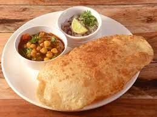

Ingredients
- Masala
- Chana
- 2 cup soaked overnight chickpeas
- 2 chopped onion
- 1 teaspoon coriander powder
Directions
- To prepare the chole, soak chickpeas in water overnight or for 6-8 hours. Then, put a pressure cooker on high flame and add the soaked chickpeas in it along with salt to taste and 1 tea bag or you can also put 2-3 tea leaves and wrap it in a cloth. Cook the chickpeas for 15-20 minutes. (Note: The tea leaves or the tea bag will change the colour of gravy from dark brown to black.)
- Meanwhile, put a pan on medium flame and heat a little oil in it. Add the cumin seeds and sliced onion to the pan. Saute the onion till golden brown, then add minced garlic, ginger and onion paste. Saute the ingredients for a few seconds until the raw smell of garlic goes away and then add tomato puree.
- Once the oil is separated, add turmeric, red chilli powder, coriander powder and chana masala. Cook the tomato-onion mixture for another two minutes, and then add cooked chole with little water. Stir well to mix the masala with the chole or the chickpeas. Check salt and allow it to cook for a few minutes. The chola is done! You can garnish with chopped onion and coriander leaves.